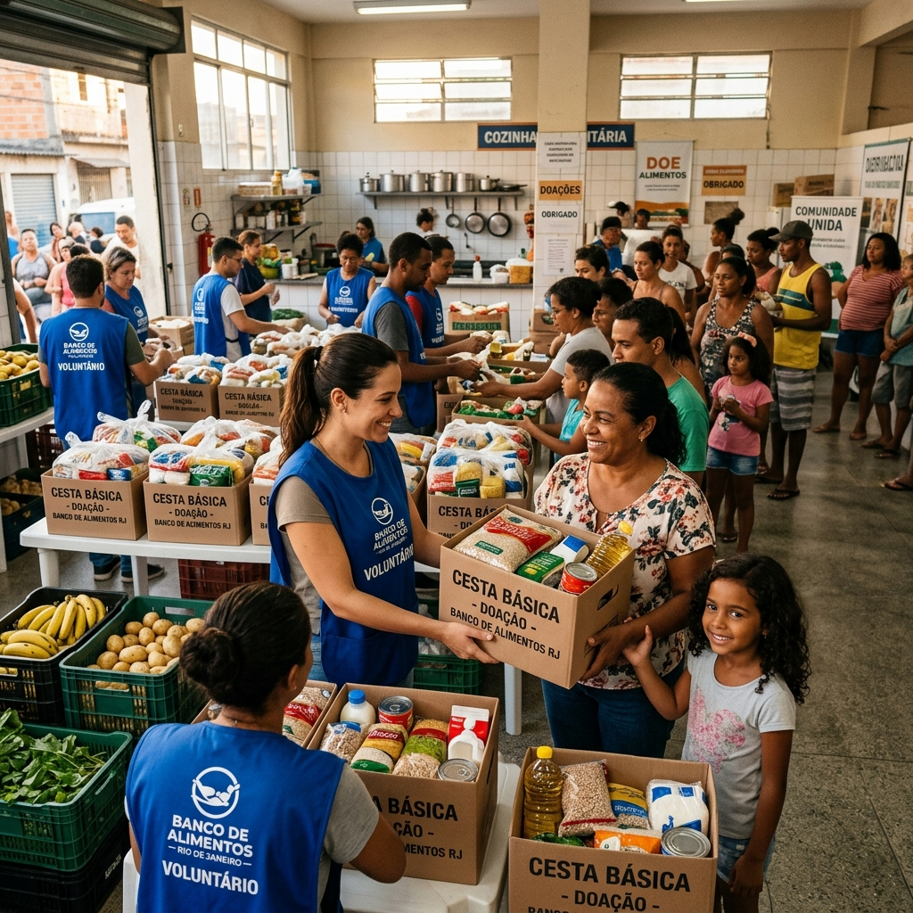

Alimentação
Mesa Cheia
O projeto Mesa Cheia atua em comunidades periféricas de Curitiba e região, distribuindo cestas básicas e refeições quentes para famílias em situação de vulnerabilidade alimentar. Com presença em mais de 15 bairros, já impactamos mais de 4.200 famílias desde 2019.
O que precisamos:
- 🍚 Arroz e feijão
- 🥫 Alimentos não-perecíveis
- 🪙 Dinheiro (Pix)
- 🚗 Voluntários com veículo
Apoiadores